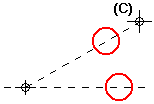

Rotate an element
-
Select one or more elements.
-
Choose the Rotate command .
-
If you want to copy as well as rotate the elements, click the Copy button on the Rotate command bar.
-
Click where you want the center of rotation to be (A).
The software displays a dynamic reference axis for the rotation.

-
As you move the mouse, the software dynamically displays the rotation axis and elements being rotated. Click to define the other end of the reference axis.
Tip:The location and position of the reference axis defines the rotation from point (B)
-
Position the elements where you want them and then click to define the rotation to point (C).

-
Instead of clicking to define the orientation of the reference axis, you can use the Position Angle box on the command bar.
-
Instead of clicking to define the to point, you can use the Rotation Angle box on the command bar. You can then click to define the side of the reference axis you want to rotate toward, or type a value in the Position Angle box.
-
To rotate by increments, type a value in the Step Angle box on the command bar.
-
You can click the Rotate command before you select elements to rotate.
-
You can use IntelliSketch to define the rotation from and to points.
-
Instead of using the Copy button on the command bar to copy the rotated elements, you can hold the Ctrl key while you click to define the to point.
-
Relationships between elements within the selection set are maintained if the relationships still apply after the elements have been rotated.
-
You can use other view manipulation commands, such as Zoom and Pan, while you are using the Rotate command.
When you finish manipulating the view, the software returns you to the Rotate command at the point where you left off.